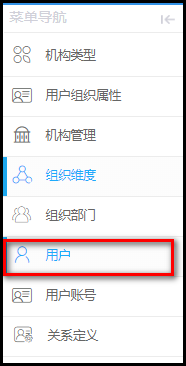
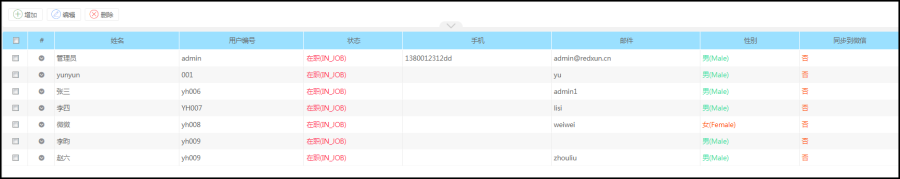
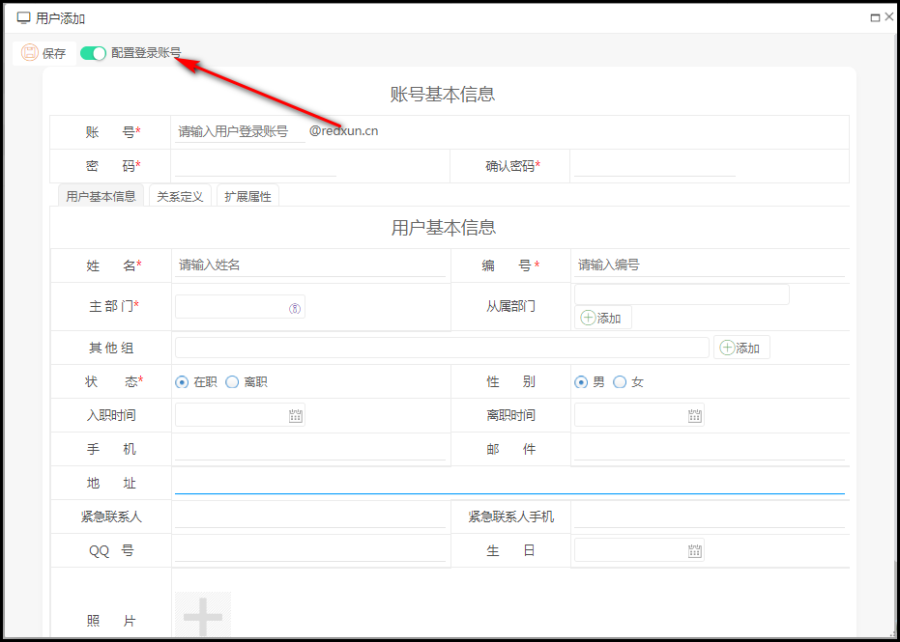

功能描述
用户是平台上的所有人员信息，包括员工的姓名、电话、邮箱，对用户信息进行维护等。
操作步骤
菜单路径：组织管理---->用户管理，进入如下菜单。

进入用户管理列表如下：

添加用户
点工具栏上的【增加】按钮则进入用户添加页：

【说明】：添加用户的同时，可以为该用户添加登录账号,（如果像保洁阿姨就不需要配置账号）。
用户基本信息需要特别填写用户的姓名，编号与主部门。
同步用户
同步用户表示同步组织架构至企业微信平台上，可有效实现用户通过企业微信实现系统的消息推送与登录，前提是需要通过在企业系统中的企业微信实现微信的属性配置。